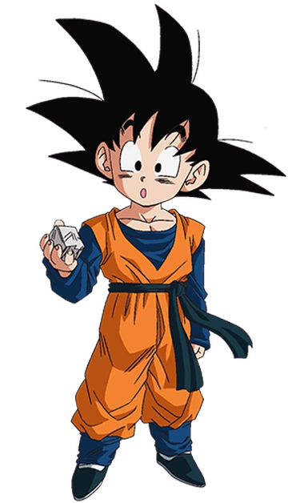

Son Gohan
Gohan (Son Gohan) es un personaje protagónico de la serie Dragon Ball, específicamente de Dragon Ball Z y Dragon Ball Super. Es el hijo mayor de Goku y Chi-Chi, y hermano mayor de Goten. Gohan es conocido por ser un personaje inteligente, estudioso y de naturaleza pacífica, aunque con un gran poder latente que se manifiesta en momentos de ira o cuando es necesario proteger a sus seres queridos
Características principales:
Híbrido:
Gohan es el primer híbrido (mitad humano, mitad saiyajin) que aparece en la serie, lo que le confiere un potencial de poder único.
Inteligencia y estudios:
Gohan se destaca por ser un personaje inteligente y estudioso, que persigue sus sueños de convertirse en un erudito.
Poder y transformación:
Gohan posee un gran potencial de poder, que se manifiesta en momentos de ira o cuando se encuentra en situaciones críticas. Puede alcanzar la transformación de Super Saiyajin, Super Saiyajin 2 y eventualmente la de Super Saiyajin 3 y la forma Bestia.
Naturaleza pacífica:
Gohan es un personaje bondadoso y pacífico, que prefiere evitar el conflicto y proteger a los demás.


Son Goten
Goten (孙悟天, Son Goten) es un personaje ficticio de la serie de anime y manga Dragon Ball. Es el segundo hijo de Goku y Chi-Chi, y hermano menor de Gohan. Goten es un híbrido Saiyajin-Terrestre, y se caracteriza por su actitud infantil y alegre, así como por su potencial como luchado
Trunks
Trunks es un personaje ficticio de Dragon Ball, hijo de Vegeta y Bulma, y un híbrido saiyajin y humano. Tiene dos versiones destacadas: Trunks del futuro y Trunks del presente.
suele ser alguien tranquilo y moderado, puede ser muy duro e intransigente cuando se trata de acabar con sus enemigos. Es así que gracias a él, se redujo a "cero" la posibilidad del despertar de Majin Boo del Futuro, manteniendo a raya cualquier amenaza tras destruir a los Androides 17 y 18 del Futuro.